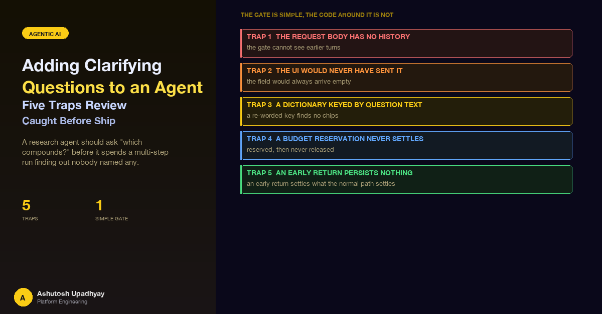

A research agent should ask "which compounds?" before it spends a multi-step run finding out nobody named any. The gate that does it is simple. The five ways it would have gone wrong were all in how the gate was wired in.
The goal was small and easy to state. A research agent takes a request, plans, calls a dozen tools, and writes up the result. That run is the expensive part of the product. If the request says "run the analysis" and never names what to run it on, the agent has two choices: guess, or burn a full run finding out it cannot proceed. A person would ask. So the agent should ask, once, before it spends anything.
The design went through review twice. The first design, asking through a tool, was rejected in review. The second, a gate between request classification and the agent, was built and then reviewed against the real request handler. That second review found five traps. All five were caught in review, before the gate shipped. None of them reached a user. This post is about why they were easy to write, and why none would have been visible from the usual signals: a green test run, a clean log, a plausible-looking response.
The pattern in one sentence. An early return from a request handler skips everything the normal path does after the point you returned from, and every one of those skipped things is something the normal path was quietly relying on: releasing resources, persisting state, recording what was spent.
If you want the background on how session history and in-flight context work in this kind of agent, the post on in-flight context overflow covers the loop. The streaming side, where the early return has to emit a complete event stream of its own, is in the post on SSE traps.
The obvious way to give an agent a "stop and ask the user" capability is to give it a tool. The model decides the request is underspecified, calls an ask-the-user tool, the runtime surfaces the question, and the loop ends. It is a natural fit for an agent framework, and it was the first thing I designed.
Review rejected it for four reasons, and each one is a property of this particular system rather than of tools in general:
All four share a root: the question is not something the agent does. It is a decision about whether to start the agent at all. That points at a different place to put it.
The gate is a separate, single model call that runs after the request has been routed and before the agent is built. It looks at the latest message, plus a short window of recent text turns for context, and decides one thing: has the user asked for a specific analysis without naming anything for it to run on? If yes, it returns up to three short questions with optional answer chips. If no, or if anything at all goes wrong, the request continues exactly as if the gate did not exist.
request arrives
-> validate, auth, load session history once
-> reserve daily token budget (acquires something)
-> route: classify the request tier
-> GATE (research routes only, skipped on a resubmit)
asks? -> early return: persist turns, settle budget, send question
no/err -> continue
-> acquire concurrency slots (acquires something)
-> build agent and run
-> persist turns, settle budget, release slotsA few design decisions in that sketch matter later:
A tool inside the gate is fine. The gate's own model call returns its questions through a structured tool-use block, because that is a reliable way to get a typed result. That is a tool in a one-shot call that nothing else observes. It is not a tool in the agent's tool list, so none of the rejection reasons above apply to it.
That is the whole feature. What follows is what the second review found when it read the gate against the real request handler.
The gate needs conversation context. "Run it on those" is only answerable if the gate can see which compounds "those" refers to. My first draft read the history off the request object, the way the function signature of the handler made it look natural to do.
The request model has exactly three fields: the query, the session identifier and an optional set of scoring weights. There is no history on it. Pydantic ignores unknown fields by default, so a client that did send one would have had it dropped before the handler saw it, and the attribute would not exist. Reading it would have raised an attribute error on every research query. Not on the ambiguous ones. Every one, because the read happens before the gate decides anything.
# What the first draft would have done
history = request.history # AttributeError: no such field
# What the handler does instead
history = session_store.get_history(user, session_id) # authoritativeThe server-side session store is the single source of truth for what was said. The fix is to read it there. In the final handler that read happens once per request, early, and the same list is passed to the classifier, the gate and both agent paths, which replaced up to three separate reads. The gate takes the already-loaded history as an argument and only falls back to loading its own if it was not given one.
One detail is worth copying: the gate keeps only the last few messages that carry text, truncated, and skips stored tool-only turns before slicing, so the original request is not pushed out of the window by a long run of tool traffic.
This is the same bug seen from the other end, and it is why fixing only the schema would have been wrong. Suppose the request model had grown a history field. The browser client builds its submit body from the query, the session identifier and the optional weights. It does not send history, and it should not: the client holds a rendered view of the chat, not the canonical stored turns, and a client-supplied history is also something a user could edit.
So the field would have existed, been documented, passed a unit test built around a hand-made body, and still arrived empty on the wire. The only reliable path does not depend on either side agreeing: the server reads its own store.
The answer chips were the next problem. Each question can come with a few suggested answers: a handful of options for something enumerable, an empty list for something open-ended like an identifier. The first schema for the gate's reply made that a dictionary from question text to a list of options.
// first shape: the model must reproduce the question text exactly, as a key
{ "questions": ["Which compounds should I analyse?"],
"suggestions": { "Which compounds should I analyse?": ["CMPD-0001", "CMPD-0002"] } }A model asked to emit the same string twice in one reply will, often enough, emit it slightly differently the second time: a dropped question mark, a re-worded clause, different punctuation. When the key and the question do not match, the lookup returns nothing. The user sees the question with no chips, just a bare text box. There is no error, no log line and no failed request. The feature looks like it works, with a quietly worse interface, and nothing in a happy-path test would flag it, because the happy-path test writes the key by hand.
The fix is to stop asking the model to reproduce a string and use position instead. Suggestions become a list of lists, parallel to the list of questions, and the pairing is structural.
{ "questions": ["Which compounds should I analyse?", "Over what time range?"],
"suggestions": [[], ["Last 30 days", "Last year"]] }The server pairs them by index before it filters anything, so dropping an empty or non-string question cannot shift the options onto the wrong question. Missing entries become empty lists, non-list entries are coerced to empty, and extra entries are ignored. The TypeScript side of the contract is an array of string arrays. The same lesson applies anywhere a model has to repeat a string as a key: if two parts of a reply must agree, make the structure enforce it, not the model's memory.
Every query reserves an estimate against the user's daily token budget before the work starts, using an atomic conditional update so concurrent requests cannot all pass the check at the same balance. When the work finishes, the reservation is settled against the real usage. Reserve first, settle later is a sound pattern, and it has a requirement: every path out of the handler must settle.
The gate runs after the reservation and returns before the settle. The reservation is taken in the budget block near the top of the handler, and settlement lives at the end of the agent run. The gate's early return jumped between the two. Nothing in the handler was wrong on its own; the early return just never reached the line that gives the reservation back.
The consequence would have been a slow leak that no single request shows. Each clarification would have left its reservation held against the daily counter, with no agent run to settle it. The arithmetic is simple. If each reservation is a fixed estimate E and the daily limit is L, then L / E clarifications would exhaust a user's day without a single analysis having run, and nothing about any single request would have looked wrong. (That is arithmetic from the design, not a measurement: the leak was found in review and never ran.)
# early return, after the fix
reservation.settle(gate_tokens) # only if one was taken
return clarification_streamTwo refinements are worth keeping. First, the settle is guarded by the same condition that guarded the reservation, and goes through the request's single reservation object, so it happens once and is a no-op if nothing was reserved. Second, it settles against what the gate actually spent, not zero. The gate's call is a real model call with real input and output tokens, so those tokens are counted toward the daily total, and recorded against the user in the usage store, but the request is not counted as an answered query. A question is not an answer. The cost-attribution side of this, why a cheap helper call still belongs in the books, is the same argument as the tiering discussion in the post on FinOps for agentic AI.
Also note what the gate's placement bought. Because it runs before the concurrency slots are acquired, the early return owes no slot release. If I had put the gate after them, the same review would have asked for that too.
The last trap is the one a user would have noticed first, and only after the fact. In the normal path, the handler writes the conversation to the session store when the agent finishes: the user's message and the assistant's reply, with a stable message identifier. The gate returns before that point.
The result would have looked fine in the moment. The question card appears, the user types an answer, the answer is sent, the agent runs and replies. Then they reload the page. The session store never saw the original request or the clarification question, so the reloaded chat would have shown an orphaned answer with no question above it and no sign of what it was an answer to. The first message in that conversation would have been the reply to a question that no longer existed.
The review's fix had two parts, and both matter:
The second part is a contract between two codebases: the separator the client writes is the string the server checks to break the loop. The client side documents that dependency and pins it with a test, because changing one without the other would silently turn the loop breaker off and the gate would ask again after the user had already answered.
| Trap | Why it was invisible | Fix |
|---|---|---|
| 1. History read off the request body | The attribute looks natural on a request object. Any test that builds the body by hand and the client schema both agree on the wrong shape. | Read the server-side session store; load once per request and pass the list to every consumer. |
| 2. The UI never sends history | Adding the field to the schema would make it pass every test and stay empty on the wire. | Same fix: the store is the source of truth, not either side of the request. |
| 3. Suggestions keyed by question text | A paraphrased key returns nothing, no error is raised, and the card just has no chips. | Parallel arrays: suggestions[i] belongs to questions[i], paired before any filtering. |
| 4. Reservation taken, never settled | Each early return would leak a small fixed amount. No single request looks wrong. | Settle at the gate's real usage before returning, through the request's single reservation object. |
| 5. Turns not persisted on the early path | The live session works. Only a reload shows an orphaned answer. | Persist the pair before returning, and make the resubmit carry the original request and answers. |
Traps four and five have the same shape, and the gate's placement raised the same question a third time. The normal path, taken from request to response, does a list of things that nobody wrote down as a list, because they all live at different lines in a long function. An early return is a new, shorter path, and the author of the early return is thinking about the question they are asking, not about the lines they are skipping.
The useful discipline is to write that list down once, before writing the return, and walk it:
for each resource the normal path acquires BEFORE this return point:
budget reservation -> settle (with real usage)
concurrency slots -> release, or place the return before them
in-flight / lock flags -> clear
for each piece of state the normal path writes AFTER this return point:
persisted conversation -> write the turns the user can see
usage / cost records -> record what was really spent
trace / span for the turn -> finish it
what the CLIENT needs on resubmit:
everything, in the request itself, in case persistence failedThe gate's response stream follows the same rule. Its output is recorded on the turn's trace like any other reply, it carries a model event and a message identifier before the question, and it ends with a complete event carrying a marker that the turn is waiting on the user. A client that sees a stream with a question but no terminal event would sit on a spinner forever.
None of the five fail loudly in the normal course of testing. A suite that mocks the model and hand-builds request bodies has already decided, in its fixtures, that the history exists, that the model returns the key it was shown, that nobody checks the budget counter after a question, and that nobody reloads the page. The assumptions in the code and the assumptions in the tests are the same assumptions. That is the situation the post on tests that cannot fail describes, and the first of these traps is a clean example: the only way to see it is to look at what the real request model contains.
What worked was reading the new path against the existing handler, line by line, and asking of each statement "what does the function do after this that I am about to skip?" That is a code-reading question, not a test-writing one. The tests worth writing are the ones that reading points at: a request with no history, a reply with a paraphrased key, a budget counter checked after a clarification, a reload after one.
What counts as a good clarifying question. The gate asks only when the request names an analysis to run and names nothing at all to run it on. If something was named but needs resolving to an identifier, the agent proceeds and states its interpretation. If any parameter other than the subject is open, it picks a sensible default and proceeds. A gate that asks about everything just moves the cost from the model to the user.
The answer chips are suggested fresh for each question. A natural extension is to let the user's own earlier answers shape them. If someone has answered "which compounds?" with the same short list a few times, the next time that list can be offered first, ahead of generic options. It would be a small change to what the card is given, with no change to the gate's decision about whether to ask, and it would turn a question the user has already answered into a one-click confirmation.
Disclaimer: The views and opinions expressed in this post are my own and do not represent those of my employer or any organisation I am associated with.